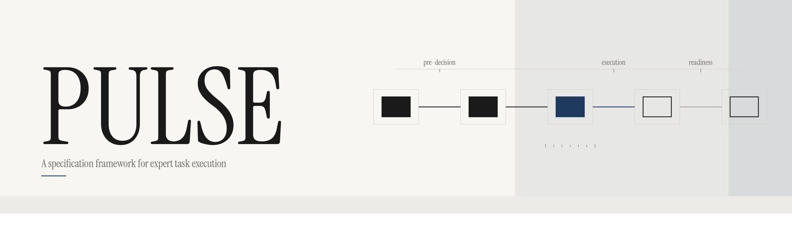
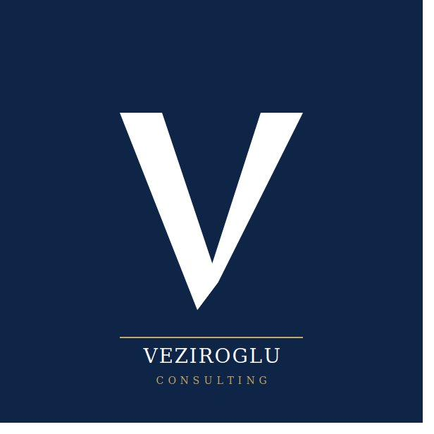

Four practices. Outcome-led.
Every engagement is wrapped by FORTE, our delivery practice. TENOR, SCALE, and SCORE provide specialist capability, engaged per scope.

Outcome-led consulting from capability modelling through to turnkey programme delivery. The engagement wrapper for every project.

Data governance frameworks, data quality management, and analytical capability. Trusted, governed, actionable data.

The capability envelope of humans, tools, platforms, and AI agents. Who and what does the work, and how they fit together.

Operating model design, process architecture, governance structures, and human-machine allocation.
Products & IP
Licensed frameworks and software that encode expert knowledge into structured, portable, machine-consumable assets.
A domain-agnostic specification framework for encoding reliable task execution under real-world conditions. Licensed to enterprise customers.
Learn moreSurfaces the long tail of companies that ranked search and prebuilt directories leave off the map. Built for M&A and deal-sourcing analysts.
Visit ovrtr.co.uk
FORTE is how Veziroglu delivers consulting. We don't sell roles or time. We sell outcomes. Every engagement starts with what needs to be true at the end, and works backwards to the architecture, governance, and delivery programme required to get there.
Business Capability Modelling
Define what your organisation needs to be able to do, independent of org charts, systems, or current constraints.
Target Operating Model Design
Translate strategy into an operating model that specifies capabilities, processes, technology, and governance.
Transformation & Programme Delivery
End-to-end programme leadership from idea to turnkey delivery. Platform selection, vendor coordination, steering committee governance, risk management, and phased rollout.

Transformation programmes fail when decisions are built on ungoverned data. TENOR establishes the frameworks, standards, and analytical capability to ensure the data your organisation depends on is trustworthy, well-understood, and fit for purpose.
Data Governance Frameworks
Ownership models, data stewardship, policy definition, and accountability structures. Designed to embed governance into how the organisation actually operates.
Data Quality & Standards
Profiling, quality rules, lineage mapping, and remediation. Establishing measurable standards so data quality becomes visible, tracked, and continuously improved.
Data Analysis & Insight
Analytical capability embedded within business teams. Requirements-driven analysis, reporting design, and the bridge between raw data and informed decision-making.

Most organisations know what work needs doing but not what combination of people, tools, platforms, and AI agents should do it. SCALE maps the full resource landscape and designs the architecture that determines who and what performs each capability, at what level of autonomy, and with what fallback.
Resource Landscape Mapping
A structured view of every resource type available to the organisation: human roles, tooling, platforms, automation, and AI. Classified by capability, availability, and cost.
Capability Envelope Design
Defining what each resource type can and cannot do, under what conditions, and at what quality threshold. The foundation for allocation decisions that hold under pressure.
AI Agent Architecture
Where AI agents fit within the resource envelope. What they can own, what they assist, where human oversight is required, and how handoffs are governed.

An operating model that lives in a slide deck is not an operating model. SCORE designs the process architecture, governance structures, and human-machine allocation that determine how work actually gets done. It is where PULSE framework IP is most directly applied.
Process Architecture
End-to-end process design that specifies not just the sequence of activities but the attention, verification, and recovery logic at each step.
Governance Design
Decision rights, escalation paths, accountability structures, and the control framework that keeps the operating model honest. Governance as an enabler, not an overhead.
Human-Machine Allocation
Which tasks belong to people, which to machines, and which to a governed combination. Allocation decisions grounded in capability, risk, and the tolerance model.

Most organisations hold their critical execution knowledge in people's heads, in undocumented habits, and in tribal expertise that walks out of the door when someone leaves. PULSE captures that tacit and skill-based knowledge and converts it into durable, AI-consumable organisational assets.
PULSE output is both human-readable and machine-consumable. It replaces process and procedure documentation while operationalising (not replacing) policy. The target audience is business analysts and operating model designers at regulated enterprise customers.
Task Units
Structured execution blocks with typed contracts, attention mechanisms, and pre-specified recovery paths.
Attention Contracts
What to focus on, when, and what triggers a shift. Typed, explicit, with shift conditions.
Two-layer Tolerance
Contract ceiling and user threshold. Deviation is measured, not guessed. Recovery is pre-specified.
Environment Checks
Two-tier model with event-based session boundaries. Conditions verified before and during execution.
Resource Classification
Mandatory, recommended, conditional. Each with named absence responses. Readiness checks assess capabilities, not inventory.
Verify, Recover, Refuse
Typed verification gates, viable recovery confirmed before execution begins, and first-class refuse logic.

A boutique consultancy founded on a decade-plus track record of delivering complex change in financial services and regulated industries.
FORTE grew from hands-on programme delivery experience across private banking, enterprise content management, and large-scale digital transformation. TENOR grew from repeatedly seeing transformation programmes undermined by ungoverned data. SCALE and SCORE emerged from the recognition that operating models need to account for AI agents alongside human resources. PULSE grew from the realisation that the expert reasoning behind reliable execution had never been formalised as a portable, licensable framework.
Let's talk.
Whether you need consulting delivery, specialist capability, or you're exploring our products for your organisation.
info@veziroglu.co.uk